Наверное, я напишу не одну статью об этом прекрасном городе. Но, не расходитесь, будут и другие города, позже.
Так как у нас теплые деньки и мы чутка усталые, то решили далеко не ездить. Утром рано мы отправились в наш любимый город, в котором не были несколько месяцев. И тут как всегда уютно и чудесно.
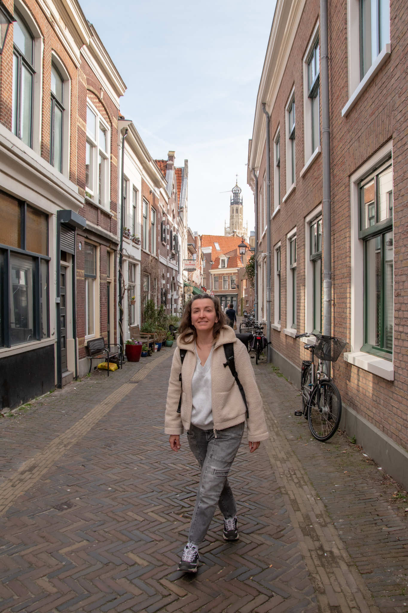
Кофе и булочки
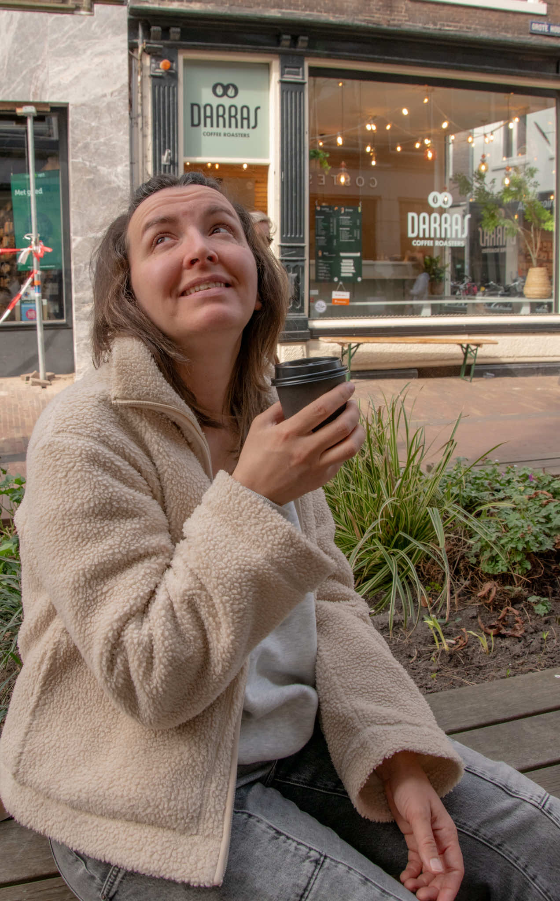
Мягкий вкусный кофе можно захватить в 'Darras Coffee Roasters'. Такое вкусное кофе вне дома я давно не пила.
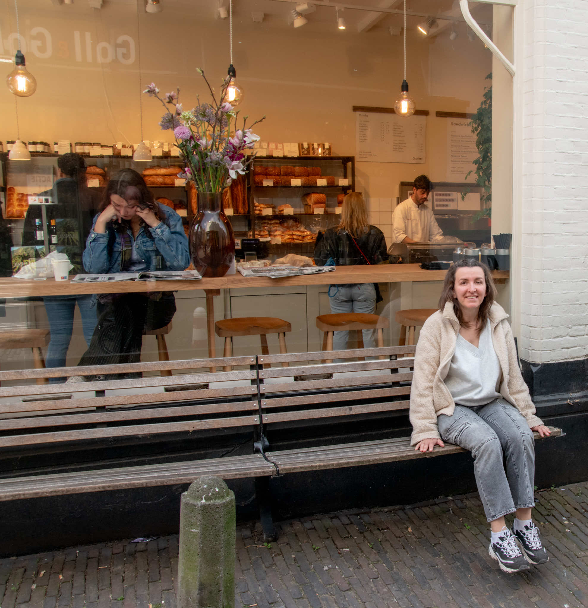
Наивкуснейшую выпечку отведали из "Oscar Bakery". С кофе это чертовски вкусно. Пока фигура.
Пообедать можно в любом заведении. Так как конкуренция очень высокая, то и уровень обслуживания достаточно на приличном уровне, как и вкусность блюд.
Центр города
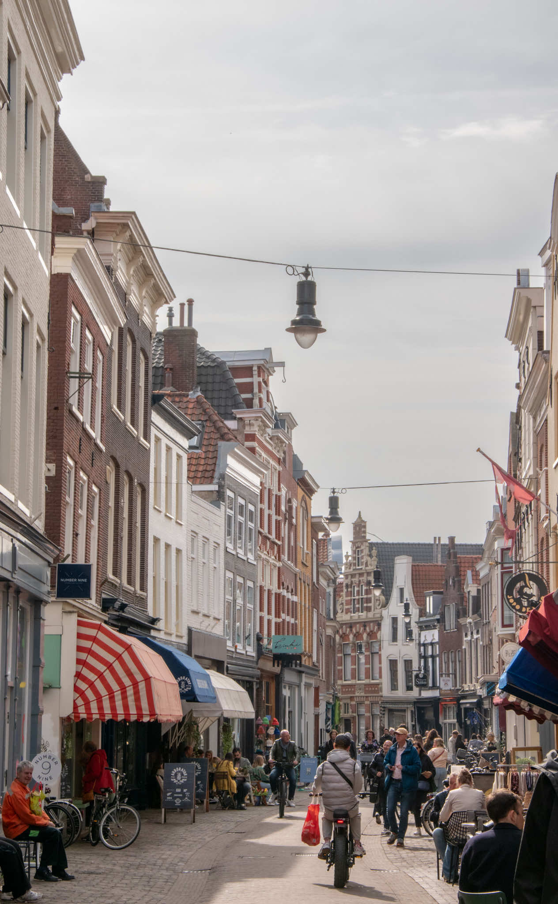
В центре города с десяти утра кипит жизнь: с коляской достаточно тяжело протиснуться сквозь толпы. Плюсы и отличия от Амстердама: почти никто не курит травку и очень чисто.
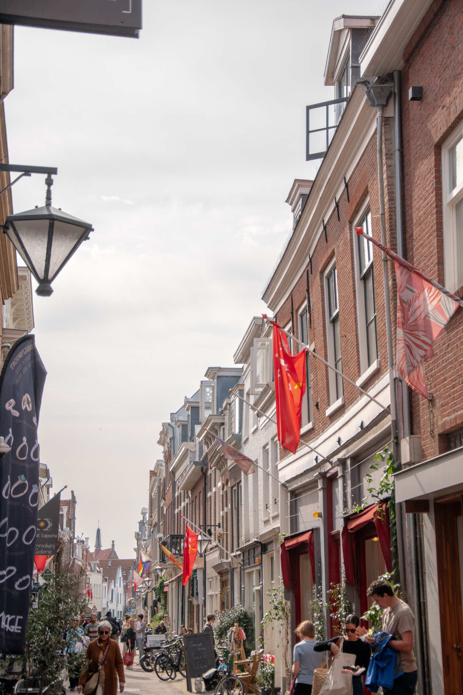
В магазинах очень вежливые и приятные консультанты/кассиры.
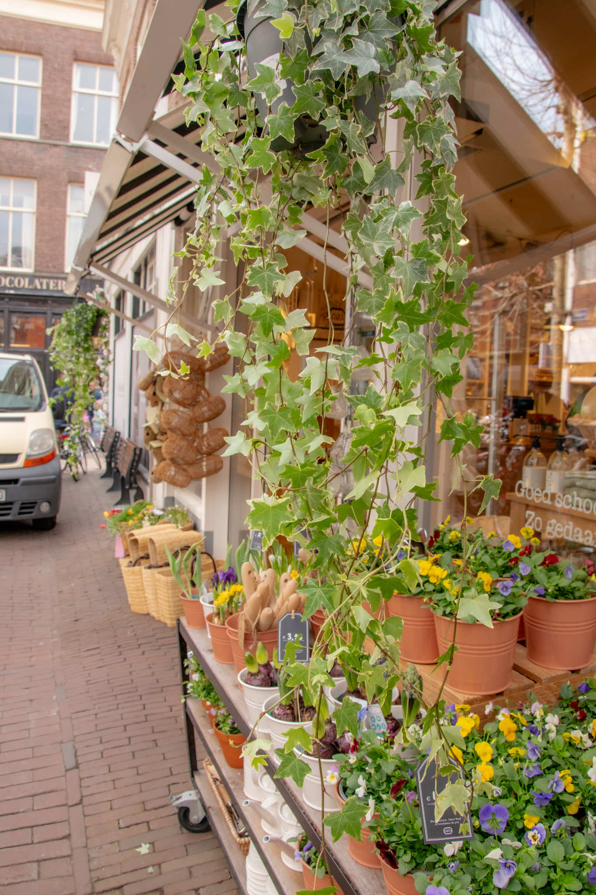
Безумно красиво оформленные маленькие магазинчики. Сразу видно, что за центром города очень следят.
Windmill De Adriaan (1779)
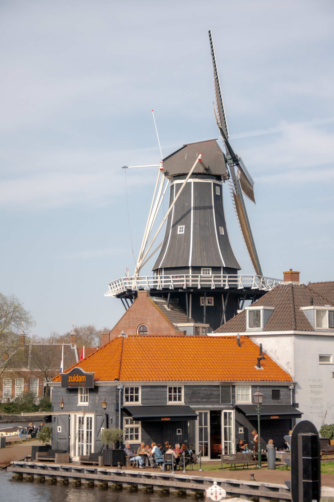
Изюминка нашей поездки - Windmill De Adriaan. Она была построена в 1779 году на берегу реки Спарне и долгие годы служила для помола табака, а затем гипса и цемента. Сейчас там музей и экскурсии. Но с детьми можно только с 5 лет. Как можно догадаться: нас не пустили.
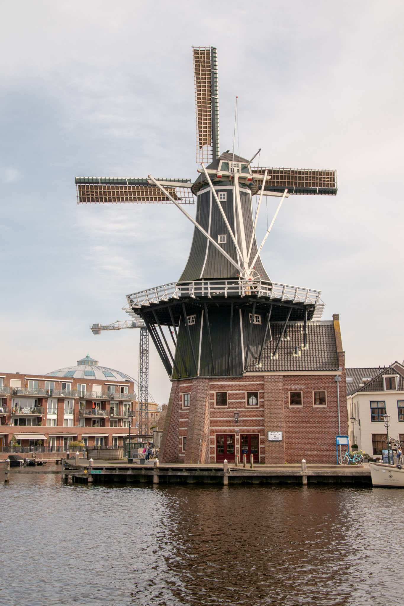
Но мы не стали унывать и пошли...
Koepelgevangenis
И мы пошли в тюрьму. Правда, бывшую. Сейчас там офисы компаний и арт-пространство. Видите на фото с мельницей большой купол? Вот это она.
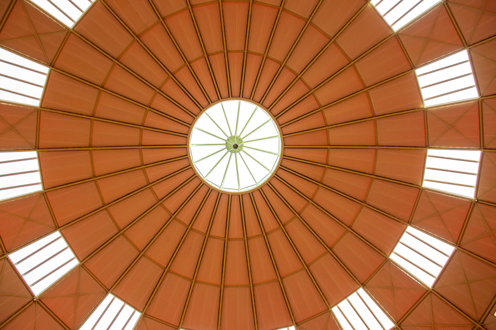
А это купол изнутри. В пространстве есть также кафе, кинотеатр и небольшие экспозиции в бывших тюремных камерах. В общем, хорошее место для культурного досуга.
А еще в Харлем много животных, особенно кошек.
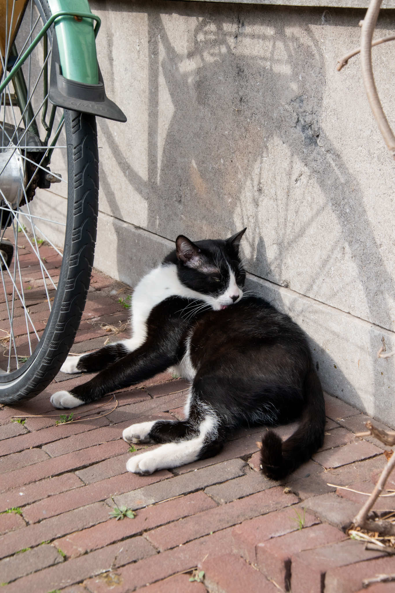
Попробуйте найти тут ;)
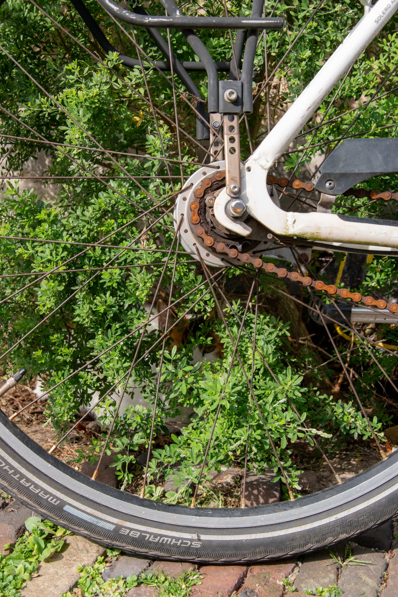